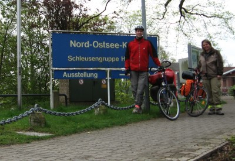
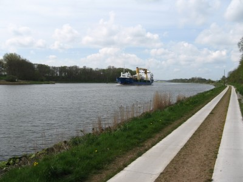
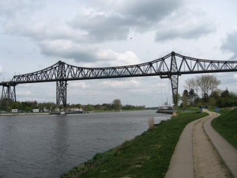
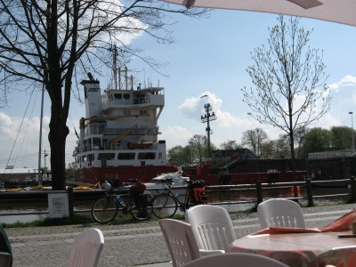
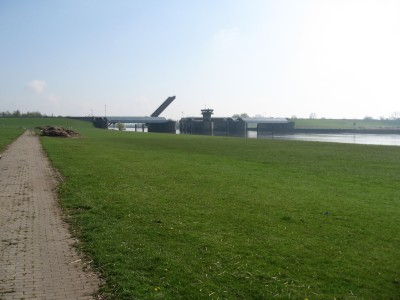

Nord-Ostsee-Kanal und Elbe
Donnerstag, 01.05.2008:
Kiel-Holtenau - Breiholz (61km)
Per Bahn bin ich gestern Abend nach Kiel gefahren. Erstmalig mit dem Rad
im Intercity. Das Fahrrad war ruckzuck im Fahrradabteil befestigt, und ich
suche in dem wegen des beginnenden langen Wochenendes ziemlich ausgebuchten
Zug meinen reservierten Sitzplatz. Fünf Stunden später stand ich in
Kiel, wo mich Tanja am Bahnhof abholte. Mit ihr geht es dieses Jahr auf
große Fahrt.

Start an der Schleuse in Kiel-Holtenau
Wir fahren am Vatertag um kurz vor 10Uhr in Kiel-Holtenau direkt an der
Schleusengruppe des Nord-Ostsee-Kanals los. Es gibt mit dem Nord-Ostsee-Kanal
Radweg (NOK-Route) eine gut ausgeschilderte Radroute, die aber oft den Kanal
verlässt und etwa 315 Kilometer von Kiel nach Brunsbüttel
benötigt. Wir wollen den direkten Weg nehmen und zwar immer an der 97
Kilometer langen Verbindung zwischen Kiel und Brunsbüttel entlang. Neben
dem Kanal befindet sich auf beiden Seiten ein Wirtschaftsweg, der mit zwei
ca. 40cm breiten Betonplatten belegt ist, dazwischen ein Grasstreifen, der
sich aber zum Spurwechsel gut befahren lässt.

Von Schiffen unterbrochene Langeweile
Die kanalimmanente Langeweile wird von imposanten Seeschiffen unterbrochen,
die den Kanal erstaunlich schnell passieren. Der Kanal wird von diesen
Schiffen in 6.5 bis 8.5 Stunden passiert. Manchmal befährt auch ein
so genanntes Traumschiff den Kanal. Die Schleusenzeiten dieser Schiffe lassen
sich unter
diesem Link herausfinden.
Bis zur Fähre Landwehr läuft es dann bei leichtem Gegenwind (dort
oben kommt der Wind angeblich immer von vorne) recht gut. Dann müssen
wir den Kanal kurz verlassen und über die Dörfer Schinkel und
Großkönigsförde gelangen wir, nach kurzer Zeit doch wieder
zum Nordufer des Kanals. Vor Rendsburg unterqueren wir die Hochbrücke der
A7 und genehmigen uns ein Eis. Wir fahren mit der unter einer
Eisenbahnbrücke befestigten Schwebefähre den Kanal und fahren ein
kurzes Stück an der Südseite entlang bis zum
Fußgängertunnel Rendsburg. Dort schieben wir die Räder unter
dem Kanal entlang wieder zum Nordufer.

Die Schwebefähre in Rendsburg
Wir machen weiter bis zur Fähre Breiholz und fahren vom Kanal nach
Norden bis zu Eider. Dort befindet sich ein Campingplatz und damit das Ende
der heutigen Etappe. Das Zelt ist schnell aufgebaut und während des
zweiten Bieres fäengt es an zu regnen. Glück gehabt.
Freitag, 02.05.2008:
Breiholz - Brunsbüttel (55km)
Ein Notfall tritt ein. Wir bemerken, dass wir den Kaffee zu Hause gelassen
haben. Ohne Wachmacher geht es
also wieder aufs Rad. In Breiholz gibt es nicht viel allerdings einen
Bäcker, der auch Kaffee verkauft. Der Tag ist gerettet.
In Oldenbüttel
wechseln wir die Kanalseite, da uns das einen Umweg am Gieselau Kanal erspart.
Aber nach wenigen Kilometern nehmen wir eine weitere Fähre in
Fischerhütte zurück zum gewohnten Nordufer, das bald eigentlich eher
Westufer heißen müsste, da der Kanal einen Knick nach Süden
macht. Dadurch kommt der Wind nun auch mehr von der Seite. Wir unterqueren
zwischen Schafstedt und Hohenhörn die A23 und passieren Burg
(Dithmarschen). Will man mit der Bahn zurück nach Kiel, wäre Burg
eine Option, denn die Bahn macht um Brunsbüttel einen weiten Bogen.
Hinter der nächsten Hochbrücke sieht man schon die ersten Öltanks
von Brunsbüttel, und an der dortigen Schleusenanlage genehmigen wir uns
nach 55 Kilometern bei bestem Wetter ein Schleusenbier.

Schleusenbier direkt an der Brunsbütteler Schleuse
Bis zum Campingplatz,
der direkt hinterm Deich liegt, ist es nur noch ein kurzes Stück.
Samstag, 03.05.2008:
Brunsbüttel - Hamburg (95km)
Da wir erstens von Brunsbüttel aus schlecht weg kommen und wir zweitens
erst am Sonntag nach Hause fahren müssen beschließen wir von
Brunsbüttel die Elbe entlang nach Hamburg zu fahren. Wir nehmen an der
Kanalschleuse von Brunsbüttel die Kanalfähre nach Dagebüll und
achten darauf, dass der Elbdeich immer rechts von uns liegt. Bei Sankt
Margarethen überqueren wir den Deich und nähern uns Brokdorf. Der
Wind kommt von hinten, und die Räder rollen wie von selbst. Am AKW vorbei
müssen wir erst am Störsperrwerk kurz warten. Die Fahrbahn ist
hochgeklappt, damit Schiffe passieren können.

Das Störsperrwerk
In Glückstadt umrunden
wir das Hafenbecken, damit wir die schweren Räder nicht mehrere
Treppenstufen übers Sperrwerk tragen müssen. Der Radweg ist dort
etwas merkwürdig beschildert.
Weiter geht es mal vor, mal hinterm Deich entlang bis nach Kollmar. Dort am
Hafen wird der knurrende Magen mit einem Krabbenbrötchen beruhigt. Die
nächste willkommene Abwechselung ist das Krückausperrwerk.
Dieses Mal ist die Fahrbahn aber unten und wir kommen direkt hinüber. Kurz
danach folgt das Pinnausperrwerk, auch hier haben wir Glück. Die Wiesen
am Deich werden intensiv von Schafen genutzt, und so gilt es hier,
häufiger diesen Tieren auszuweichen und genussvoll durch
Schafscheiße zu radeln. Bei Wedel
erreichen wir dann das Hamburger Einzugsgebiet, und wir kommen nicht mehr so
schnell voran. Bei Blankenese wird es noch schlimmer, und bei
Övelgönne wird es so voll, das nichts mehr geht. Wir müssen
absteigen und schieben. Ab dem Fischmarkt rollt es aber wieder ganz gut, und
wir kommen gut bis zum Hamburger Bahnhof durch.
Informationen:
Schleuse Kiel-Holtenau
Campingplatz Breiholz, Fährstr. 1, 24797 Breiholz, Tel.: 04332-373
Campingplatz in Brunsbüttel
Schleuse Brunsbüttel
Wann kommt einem welches Traumschiff entgegen?
|